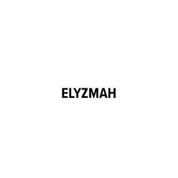

Trade Mark Journal No.2025/026 27 June 2025
UK00004218359 12 June 2025 (3,8,9,14,16,18,20,21,24,25,28,30,35,41)

- Class 3
- Beauty serums; Beauty creams; Beauty lotions; Beauty care cosmetics; Beauty masks; Masks (Beauty -); Beauty soap; Beauty milk; Beauty gels; Beauty milks; Beauty creams for body care; Facial beauty masks; Beauty balm creams; Beauty preparations for the hair; Beauty care preparations; Distilled oils for beauty care; Beauty tonics for application to the face; Beauty masks for hands; Beauty serums with anti-ageing properties; Beauty tonics for application to the body; Natural cosmetics; Body cleaning and beauty care preparations; Non-medicated beauty preparations; Natural makeup; Skincare cosmetics; Body care cosmetics; Natural perfumery; Body and facial creams [cosmetics]; Hair cosmetics; Cosmetics; Skin care cosmetics; Colour cosmetics; Facial creams [cosmetics]; Colour cosmetics for the skin; Anti-aging moisturizers used as cosmetics; Hair care creams [for cosmetic use]; Cosmetic products in the form of aerosols for skincare; Body creams [cosmetics]; Colour cosmetics for the eyes; Cosmetics for eye-lashes; Natural oils for cosmetic purposes; Hair care lotions [for cosmetic use]; Cosmetics for suntanning; Organic cosmetics; Facial makeup; Cosmetic products in the form of aerosols for skin care; Decorative cosmetics; Sun care lotions [for cosmetic use]; Eye cosmetics; Creams (Cosmetic -); Cosmetic creams; Cosmetics and cosmetic preparations; Sunscreens [for cosmetic use]; Cosmetic moisturisers; Cosmetic soaps; Sunscreen [for cosmetic use]; Cosmetic facial lotions; Facial lotions [cosmetic]; Cosmetic soap; Lotions for cosmetic purposes; Cosmetic masks; Tonics [cosmetic]; Dyes (Cosmetic -); Cosmetic dyes; Facial creams [cosmetic]; Facial creams [for cosmetic use]; Cosmetic powder; Cosmetic preparations; Anti-aging creams [for cosmetic use]; Facial cleansers [cosmetic]; Cosmetic pencils; Pencils (Cosmetic -); Anti-ageing creams [for cosmetic use]; Cosmetic kits; Kits (Cosmetic -); Facial moisturisers [cosmetic]; Cosmetic skin fresheners; Anti-wrinkle creams [for cosmetic use]; Lacquer for cosmetic purposes; Cosmetic creams for the skin; Skin creams [cosmetic]; Skin creams [for cosmetic use]; Pro-collagen for cosmetic purposes; Facial cream [for cosmetic use]; Henna for cosmetic purposes; Skin balms [cosmetic]; Serums for cosmetic purposes; Skin cleansers [cosmetic]; Collagen for cosmetic purposes; Cosmetic skin enhancers; Cosmetic tanning preparations; Cosmetic rouges; Cosmetic hair lotions; Cleansing creams [cosmetic]; Facial scrubs [cosmetic]; Self-tanning preparations [cosmetic]; Facial toners [cosmetic]; Pomades for cosmetic purposes; Lip coatings [cosmetic]; After-sun lotions [for cosmetic use]; Skin cream [for cosmetic use]; Suncare lotions [for cosmetic use]; Skin whitening preparations [cosmetic]; Anti-ageing serums for cosmetic purposes; Cosmetic creams and lotions; Anti-wrinkle cream [for cosmetic use]; Toning creams [cosmetic]; Cosmetic sun-protecting preparations; Adhesives for cosmetic purposes; Astringents for cosmetic purposes; Acne cleansers, cosmetic; Cosmetic facial masks; Facial masks [cosmetic]; Glitter for cosmetic purposes; Sunscreen creams [for cosmetic use]; Cosmetic sunscreen preparations; Facial washes [cosmetic]; Toners for cosmetic purposes; Lip stains for cosmetic purposes; Facial packs [cosmetic]; Cosmetic facial packs; Geraniol for cosmetic purposes; Skin care lotions [cosmetic]; Cosmetic nail preparations; Cosmetic massage creams; Cosmetic suntan lotions; Cosmetic suntan preparations; Retinol cream for cosmetic purposes; Eyelashes (Cosmetic preparations for -); Cosmetic preparations for eyelashes; Cosmetic hand creams; Skin toners [cosmetic]; Skin hydrators for cosmetic purposes; Cosmetic products for the shower; Procollagen for cosmetic purposes; Skin care creams [cosmetic]; Cosmetic creams for skin care; Pencils for cosmetic purposes; Cosmetic eye gels; Gels for cosmetic purposes; Exfoliating scrubs for cosmetic purposes; Cosmetic sun-tanning preparations; Hair tonics [for cosmetic use]; Tooth powders [for cosmetic use]; Cosmetic preparations for slimming purposes; Slimming purposes (Cosmetic preparations for -); Self tanning creams [cosmetic]; Cosmetic nourishing creams; Skin care (Cosmetic preparations for -); Cosmetic preparations for skin care; Ointments for cosmetic use; Skin conditioning creams for cosmetic purposes; Moisturising gels [cosmetic]; Moisturising skin lotions [cosmetic]; Suntan oils for cosmetic purposes; Moisturising concentrates [cosmetic]; Self tanning lotions [cosmetic]; Cotton for cosmetic purposes; Softening cleanser [cosmetic]; Essences for cosmetic purposes; Cosmetic face powders; Face powders [for cosmetic use]; Cosmetic eye pencils; Lint for cosmetic purposes; Artificial nails for cosmetic purposes; Sun creams [for cosmetic use]; Removable tattoos for cosmetic purposes; Make up foundations; Make up removing preparations; Eye make up remover; Makeup; Make-up; Lip makeup; Nail makeup; Eye makeup; Theatrical makeup; Make-up remover; Skin make-up; Make-up primer; Organic makeup; Make-up removers; Make-up primers; Eye makeup remover; Powder for make-up; Make-up powder; Powder (Make-up -); Multifunctional makeup; Foundation make-up; Make-up foundation; Make-up pencils; Make-up for the face; Make-up for compacts; Eye make-up; Make-up foundations; Make-up palettes containing cosmetics; Chalk for make-up; Make-up removing lotions; Eyes make-up; Eye make-up removers; Make-up kits; Make-up base; Make-up preparations; Make-up removing creams; Eyelid doubling makeup; Makeup setting sprays; Make-up removing gels; Make-up for the face and body; Facial concealer; Hair mascara; Make-up preparations for the face and body; Make-up removing preparations; Hairstyling serums; Facial gels [cosmetics]; Make-up removing milks; Hairstyling masks; Make-up removing milk; Skin masks [cosmetics]; Eyeliner; Cosmetics for the use on the hair; Lip cosmetics; Skin moisturizers used as cosmetics; Compacts containing make-up; Eye-shadow; Body and facial gels [cosmetics]; Mascara; Fake blood being theatrical make-up; Lip stains [cosmetics]; Eyeshadow; Nail primer [cosmetics]; Eyebrow cosmetics; Moisturisers [cosmetics]; Hair styling lotions; Nail cosmetics; Nail paint [cosmetics]; Lipstick; Hair moisturizers; Cosmetic hair dressing preparations; Self-tanning preparations [cosmetics]; Eyeshadow palettes; Nail polish removers [cosmetics]; Cosmetics for use on the skin; Tanning gels [cosmetics]; Facial wipes impregnated with cosmetics; Nail varnish remover [cosmetics]; Skin fresheners [cosmetics]; Night creams [cosmetics]; Skin moisturizer masks; Skin recovery creams [cosmetics]; Hair care lotions; Hair care serums; Hair care serum; Hair care creams; Hair care masks; Hair care preparations; Hair care agents; Cosmetic hair care preparations; Oil baths for hair care; Skin care mousse; Beard care preparations; Hair care preparations, not for medical purposes; Skin care oils [cosmetic]; Skin care preparations; Hair shampoos; Skin care creams, other than for medical use; Hair shampoo; Facial care preparations; Essences for skin care; Exfoliants for the care of the skin; Skin, eye and nail care preparations; Hair strengthening treatment lotions; Skin care oils [non-medicated]; Hand masks for skin care; Shampoos for human hair; Hair lotions; Baby hair conditioner; Hair serums; Hair lotion; Lotions for face and body care; Hair conditioner; Skin care products for animals; Hair emollients; Soaps for body care; Hair protection lotions; Cleansing milks for skin care; Wax treatments for the hair; Hair moisturisers; Foot masks for skin care; Perfumed oils for skin care; Conditioners for treating the hair; Horse oil cream for skin care; Milky lotions for skin care; Cosmetic preparations for the hair and scalp; Hair treatment preparations; Hair nourishers; Hair balm; Hair relaxers; Hair styling gel; Hair grooming preparations; Hair dye; Sun care lotions; Non-medicated skin care preparations; Hair conditioners for babies; Hair bleach; Hair conditioners; Nail care preparations; Non-medicated hair shampoos; Hair permanent treatments; Hair rinses [for cosmetic use]; Deodorants for body care.
- Class 8
- Hand tools for use in beauty care; Hand-operated hygienic and beauty implements for humans and animals.
- Class 9
- Fashion sunglasses; Fashion spectacles; Fashion eyeglasses.
- Class 14
- Fashion jewellery; Shoe jewellery; Shoe jewelry; Dress ornaments in the nature of jewellery; Bridal headpieces in the nature of tiaras; Costume jewellery; Costume jewelry.
- Class 16
- Journals; Blank journals; Blank writing journals; Blank journal books; Printed publications; Publications (Printed -); Annuals [printed publications]; Ledgers [books]; Educational publications; Wirebound books; Books; Writing books; Make-up pads of paper for removing make-up; Tissues of paper for removing make-up; Advent calendars; Calendars; Tear-off calendars; Calendar refills; Printed calendars; Calendar stands; Calendar desk pads; Pocket calendars; Desk calendars; Wall calendars; Calendar desk stands; Year planners; Date books; Day planners; Printed paper signs featuring table numbers for use for special events; Date stamps; Magnetic boards for scheduling activities and appointments; Printed paper signs featuring names for use for special events; Roller date stamps; Weekly planners; Covers for weekly planners; Monthly planners; Automatic paper clip dispensing machines for office or stationery use; Date indicators; Desktop organizers.
- Class 18
- Beauty cases; Beauty cases [not fitted]; Cosmetic bags; Cosmetic purses; Fashion handbags; Bags for sports clothing; Holdalls for sports clothing; Makeup bags; Make-up bags; Make-up boxes; Make-up cases.
- Class 20
- Make-up mirrors for purses; Make-up mirrors for the home; Make-up mirrors for travel use.
- Class 21
- Cosmetic, hygiene and beauty care utensils; Cosmetic brushes; Cosmetic sponges; Cosmetic utensils; Cosmetic spatulas; Cosmetic apparatus for microdermabrasion; Cosmetic powder compacts; Make-up brushes; Make-up sponges; Facial sponges for applying make-up; Eye make-up applicators; Makeup sponge holders; Make-up artist belts; Applicator sticks for applying makeup; Applicators for applying eye make-up; Cosmetics brushes; Make-up removing appliances; Eyeliner brushes; Applicator sticks for applying make-up; Mascara brushes; Appliances for removing make-up, non-electric; Non-electric make-up removing appliances; Hair for brushes; Hair brushes; Skin cleansing brushes; Applicators for cosmetics; Hair combs.
- Class 24
- Make-up pads of textile for removing make-up; Make-up removal wipes [textile] other than impregnated with cosmetics; Cloths for removing make-up; Textile napkins for removing makeup; Make-up pads of textile; Make-up removal towels [textile] other than impregnated with cosmetics; Make-up removal cloths [textile], other than impregnated with cosmetics; Cloth napkins for removing makeup.
- Class 25
- Fashion hats; Menswear; Ready-to-wear clothing; Knitwear [clothing]; Face masks [fashion wear] ; Casual clothing; Foulards [clothing articles]; Clothing; Casual footwear; Dance clothing; Sportswear; Clothing for sports; Sports clothing; Playsuits [clothing]; Bandeaux [clothing]; Parts of clothing, footwear and headgear; Footwear; Leather clothing; Clothing of leather; Leather (Clothing of -); Denims [clothing]; Leisure clothing; Articles of sports clothing; Knitwear; Smart clothing; Japanese traditional clothing; Clothing for leisure wear; Corsets [clothing, foundation garments]; Clothing for martial arts; Articles of clothing; Japanese style sandals of leather; Footwear for women; Headbands [clothing]; Headbands for clothing; Sports garments; Cashmere clothing; Athletic clothing; Footwear for sports; Sports footwear; Kendo outfits; Jackets being sports clothing; Men's clothing; Clothing of imitations of leather; Leather (Clothing of imitations of -); Furs [clothing]; Clothing for wear in wrestling games; Footwear for sport; Footwear for use in sport; Clothes for sports; Leisure footwear; Party hats [clothing]; Japanese style clogs and sandals; Skating outfits; Clothing for gymnastics; Clothing for cycling; Footwear for snowboarding; Clothes for sport; Articles of clothing made of leather; Clothing for skiing; Shoes; Insoles [for shoes and boots]; Insoles for shoes and boots; High-heeled shoes; Wooden shoes [footwear]; Dress shoes; Sneakers [footwear]; Slip-on shoes; Leather shoes; Tongues for shoes and boots; Tennis shoes; Jogging shoes; Ballet shoes; Esparto shoes or sandals; Walking shoes; Rubber shoes; Shoes soles for repair; Hiking shoes; Pullstraps for shoes and boots; Esparto shoes or sandles; Basketball shoes; Athletic shoes; Running shoes; Soccer shoes; Volleyball shoes; Sandals and beach shoes; Sneakers; Shoe soles; Waterproof shoes; Heel pieces for shoes; Dance shoes; Snowboard shoes; Canvas shoes; Shoes for foot volleyball; Foot volleyball shoes; Wooden shoes; Cycling shoes; Shoes for leisurewear; Platform shoes; Sports shoes; Footwear soles; Soles for footwear; Golf shoes; Athletics shoes; Sport shoes; Yoga shoes; Mountaineering shoes; Baby shoes; Hockey shoes; Football shoes; Riding shoes; Roller shoes; Insoles for footwear; Baseball shoes; Bowling shoes; Boxing shoes; Rain shoes; Gymnastic shoes; Aqua shoes; Training shoes; Handball shoes; Fittings of metal for boots and shoes; Skiing shoes; Beach shoes; Flat shoes; Nursing shoes; Shoes for casual wear; Leisure shoes; Shoes for infants; Stiffeners for shoes; Rugby shoes; Heel protectors for shoes; Women's shoes; Work shoes; Flip-flops for use as footwear; Tap shoes; Hidden heel shoes; Apres-ski shoes; Deck shoes; Driving shoes; Pumps [footwear]; Infants' shoes; Sandals; Shoe soles for repair; Spiked running shoes; Studs for football shoes; Anglers' shoes; Cleats for attachment to sports shoes; Boots; Trainers [footwear]; Shoe straps; Protective metal members for shoes and boots; Inner socks for footwear; Rubbers [footwear]; Wedge sneakers; Shoe uppers; Basketball sneakers; Knitted baby shoes.
- Class 28
- Toys presented in an advent calendar.
- Class 30
- Chocolates presented in an advent calendar.
- Class 35
- Marketing research in the fields of cosmetics, perfumery and beauty products; Retail services in relation to beauty implements for humans; Retail services in relation to beauty implements for animals; Online retail store services relating to cosmetic and beauty products; Wholesale services in relation to beauty implements for humans; Wholesale services in relation to beauty implements for animals; Commercial information and advice services for consumers in the field of beauty products.
- Class 41
- Entertainment in the nature of beauty pageants; Instruction in cosmetic beauty; Organising of beauty pageants; Beauty pageants (Organising of -); Beauty pageants (Conducting of -); Beauty arts instruction; Organisation of beauty contests; Organization of beauty contests; Arranging of beauty contests; Beauty contests (Arranging of -); Beauty school services; Beauty contests (Organising of -); Organising of beauty contests; Beauty contests (Conducting of -); Arranging of beauty contests for animals; Teaching of beauty skills; Organisation of beauty competitions; Educational services in the nature of beauty schools; Educational services relating to beauty therapy; Arranging and conducting of beauty contests; Educational seminars relating to beauty therapy; Entertainment in the nature of fashion shows; Entertainment in the nature of magic shows; Entertainment services in the nature of contests; Publication of journals; Publishing of journals; Publication of books, magazines, almanacs and journals; Publishing of journals, books and handbooks in the field of medicine; Multimedia publishing of magazines, journals and newspapers; Online publication of electronic books and journals; Publication of electronic books and journals online; Multimedia publishing of journals; Publication of electronic books and journals on-line; On-line publication of electronic books and journals; Publishing of electronic books and journals online; Publication of scientific information journals; Publishing of electronic books and journals on-line; On-line publication of electronic books and journals (non-downloadable); Publishing of medical publications; Publication of periodicals; On-line publication of electronic books and journals [not downloadable]; Publishing of books, magazines; Electronic online publication of periodicals and books; Publication of magazines; Magazines (Publication of -); Publication of newspapers, periodicals, catalogs and brochures; Online electronic publishing of books and periodicals; Publishing of electronic publications; Publication of books; Books (Publication of -); Publication of periodicals and books in electronic form; Publishing services for books and magazines; Publication of electronic magazines; Publication of electronic books and periodicals on the Internet; Online publications, namely blogs; Publication of books, reviews; Publishing of books; Publication of educational books; Services for the publication of books; Publication of audio books; Multimedia publishing of magazines; Publishing of web magazines; Publication of catalogs; Multimedia publishing of books; Publication of texts; Publication of consumer magazines; Publication of catalogues; Publishing of instructional books; Publication of calendars; Publishing services for books; Non-downloadable electronic publications.
Elyzm Readymade Garments Trading CO LLC